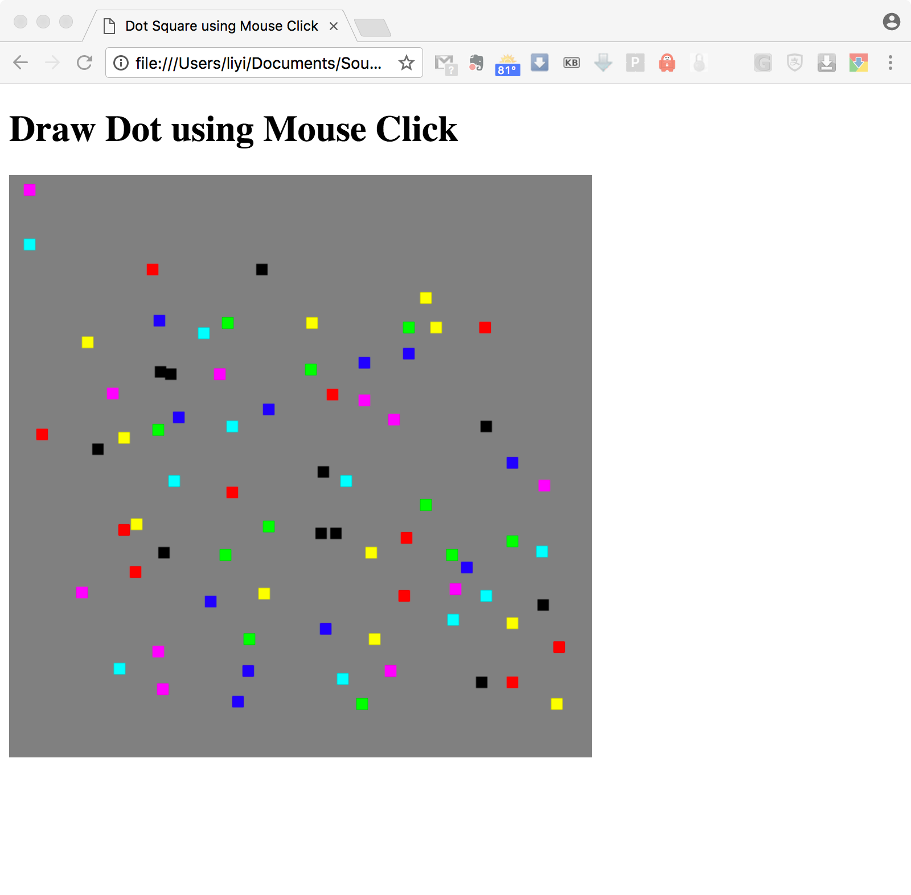
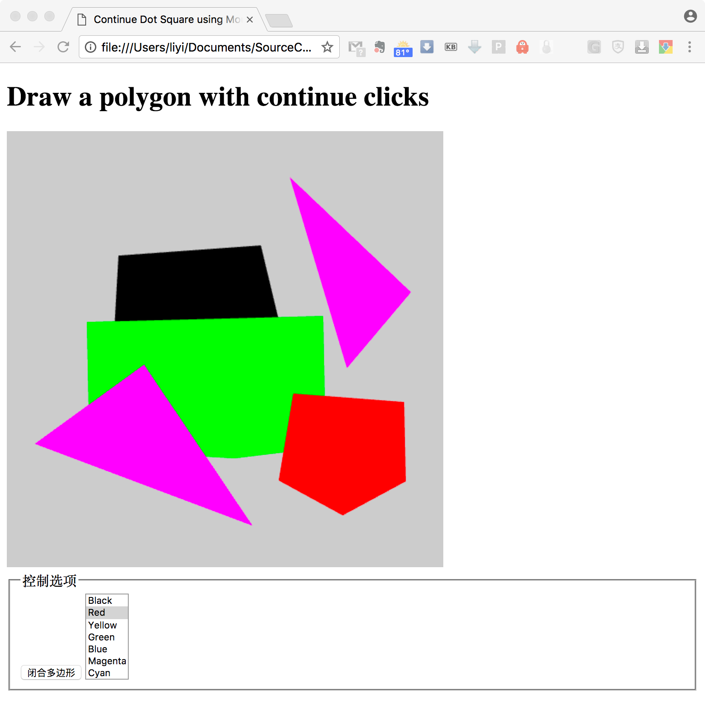

计算机图形学
第三章 交互和动画
定位和拾取
定位和拾取
窗口坐标系
将绘制区坐标转换为裁剪区坐标(正则化)
$(w,0)\rightarrow(1,1)$
$y=-1+\frac{2(h-y_w)}{h}$
定位和拾取
点击事件定位
HTML文件中的画布(canvas)可通过属性canvas.width和canvas.height设定其大小尺寸，返回的事件坐标为event.clientX和event.clientY
// add a vertex to GPU for each click
canvas.addEventListener("click", function(){
gl.bindBuffer(gl.ARRAY_BUFFER, vBuffer);
var t=vec2(-1+2*event.clientX/canvas.width,
-1+2*(canvas.height-event.clientY)/canvas.height);
gl.bufferSubData(gl.ARRAY_BUFFER,sizeof['vec2']*index,t);
index++;
});
定位和拾取
事件示例(1)
鼠标按下位置绘制矩形点
定位和拾取
事件示例(2)
连续按下鼠标键绘制三角形

定位和拾取
事件示例(3)
两次点击绘制矩形

定位和拾取
事件示例(4)
两次点击绘制矩形
定位和拾取
窗口事件
窗口事件可通过会改变画布窗口的行为触发生成，比如，移动窗口、改变窗口大小、打开窗口、最小化窗口/最大化窗口
利用其它画布的其它应用所产生的事件同样也会影响WebGL的画布，有一些默认的回调函数可用于处理此类事件
定位和拾取
reshape事件
如果用鼠标改变画布的大小，画布的内容需要重绘，可以有两种选择，一是重绘同样的物体，改变物体的大小，二是以同样的大小绘制更多或更少的物体。但一般都会保持窗口的比例
定位和拾取
onresize事件
返回新的画布大小，其值在window.innerHeight和window.innerWidth
可利用这两项属性改变canvas.height和canvas.width
window.onresize=function(){
var min=innerWidth;
if(innerHeight<min){
min=innerHeight;
}
if(min<canvas.width||min<canvas.height){
gl.viewport(0, canvas.height-min, min, min);
}
};
定位和拾取
拾取的难点
拾取，即给定画布中的点，确定该点属于哪个物体对象。由于缺少唯一性，流水线又是往前处理，定位设备也无法提供精确的定位，都造成了拾取的难度
定位和拾取
选择
固定管线OpenGL支持选择操作，对每个图元都由应用程序指定一个id，用于表明该图元属于哪个物体对象。渲染场景时，位于鼠标点击区域附近的图元的id加入点击列表(hit list)中。在渲染完成后，可通过该点击列表获取所选择的对象信息
选择的实现过程是在鼠标周围创建一个小的窗口区域，对于一个图元是否渲染在该窗口区域中进行跟踪，可以选择不显示渲染结果，也可以将其内容渲染到其它的颜色缓存中，或利用一些备用的缓存，而不作缓存交换。为实现这种选择技术，还需要记录相应点击位置的深度信息。
定位和拾取
颜色拾取
可以用gl.readPixels获得窗口当前位置上的颜色信息。但是利用颜色识别物体会碰到两个问题，一是不同的物体可以有同样的颜色，物体阴影也同样能显示多种颜色。因此，需要为每一个物体指派一个独特的颜色，并将此颜色渲染到离线帧中，然后利用gl.readPixels获得鼠标当前位置的颜色，并利用映射表找到此颜色对应的物体
定位和拾取
包围盒拾取
前两种方法都需要额外的渲染时间以完成拾取。这里可以利用包围盒表，将鼠标中心位置通过查表映射到相应的物体上